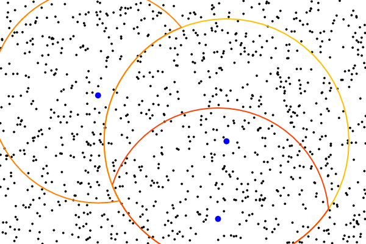
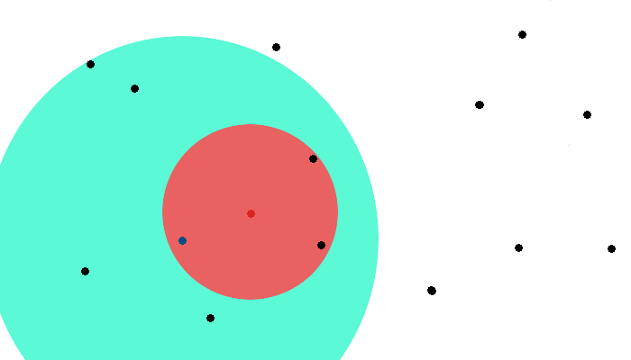

VP Tree
Introduction
We will explore a new data structure called Vantage Point Trees, for space partitioning problems. VP trees are more specifically metric trees, which are trees with the ability to efficiently partition data in n-dimensional metric space.
Advantages of the VP tree are in performing range queries on a dataset, for example, doing nearest neighbor search. A more well known data structure for KNN search is the KD tree, and we will discuss the pros and cons of using a VP tree for a similar purpose.
Construction
To illustrate how a VP tree works, we will consider a dataset of 1000 points on a 2D plane.

Each node of the VP tree stores 5 pieces of information:
- data - A list of data points it contains
- vp - A vantage point chosen from data
- mu - A radius value defining the range of the node
- inside - The left subtree
- outside - The right subtree
We will now construct the root node. The data of the root will contain all of the points. A vp is randomly chosen from data. Choosing a good vantage point has a direct impact on the efficiency of the tree, but for simplicity, we will randomly choose a point.
Once the vp is chosen, we will calculate mu. The mu value represents the radius at which half the data is inside the radius, and half is out. To illustrate the root node, the blue point is the vp, and around it is a circle of radius mu.

Now we will subdivide the points. We will create the inside subtree, with its data containing all the points inside of the radius. And we will create the outside subtree with the points outside the radius.
The tree then recursively partitions the remaining space, subvidiving the points in each node. This continues until the subtrees contain no points. Each successive node represents an ever smaller subset of the dataset. For 1000 nodes, we would only need to subdivide 9 times, because the root would have 2 subtrees of 29 = 512 points. Here is an illustration of a fully subdivided vantage point tree.

Construction Analysis
At each level of recursion, the tree splits the original problem into two subproblems of half the size. This is because the inside and outside subtrees both contain exacly half the nodes of the parent. At every node, the median of the node's data must be calculated to get a mu value. This is O(n) for the entire level.
In doing so, the tree has O(logn) depth because it makes binary splits. Therefore, the overall construction complexity of a VP tree is O(nlogn).
Searching
The whole point of building a space partitioning tree is to perform efficient search queries on it. The goal is to search as few nodes as possible to find neighbors of the query point.
Consider a circle of radius tau around the query point that encloses all of its nearest neighbors. Suppose we are searching for k nearest neighbors, then tau would contain the closest k points.
Let's examine this example on k=3 nearest neighbors:
- 14 data points (black points)
- Query point (red point)
- Vantage point (blue point)
- Mu (blue circle)
- Tau (red circle)

Notice that tau lies entirely outside of mu. That means the nearest neighbors to the query point lies entire in the outside subtree, and that is the only subtree we need to search. Therefore we can safely ignore the inside subtree, and prune half the work.
Case 2: Notice that tau is entirely within mu. This is the opposite of the previous case. We only need to search inside, and can prune the outside subtree.
Case 3
Notice that tau intersects mu. We can no longer prune a subtree, and must search both the inside and outside subtrees to find neighbors.
While searching through the tree, tau can be thought of as the area of interest around the query point. Starting at infinity, we steadily shrink tau by pruning nodes of the tree that are outside the area of interest. We iterate by searching the inside/outside subtrees where they overlap the area of interest. Here is my javascript implementation of the knn algorithm on a VP tree.
// Given root node, k nearest neighbors, and query point.
function knn (root, k, query) {
// Start search at the root
var tau = Infinity;
var toSearch = [root];
// Store results in priority queue of size k
// Ordered by distance to query
var results = new DistanceQueue(query, k);
while (toSearch.length > 0) {
// Pop an element to search.
var currentNode = toSearch.splice(0, 1)[0];
var dist = query.dist(currentNode.vp);
// Node is within area of interest, add node, decrease tau.
if (dist < tau) {
toSearch.push(currentNode.vp);
var farthest = results.last();
tau = query.dist(farthest);
}
// Some of tau is inside mu, must check inside
if (dist < currentNode.mu + tau)
toSearch.push(currentNode.left);
// Some of tau is outside mu, must check outside
if (dist >= currentNode.mu - tau)
toSearch.push(currentNode.right);
}
return results;
}Searching Analysis
VP trees partition data in a similar way to KD trees. Both select median values to split subsets of data on. KD trees select a dimension to split on, and partition with a hyperplane through the median. VP trees instead split the data with a hypersphere of radius mu. Here is an illustration of the two trees representing the same dataset.

To compare their search time on KNN, each tree was built 5 times on a random dataset, and 10 random queries were run for each build. The test cases were run on various values of n points in the dataset, d dimensions, and k nearest neighbors.
Test 1
- d = 2
- k = 1

Nearest neighbor search shows that the two trees perform similarly on low dimensional data. VP trees perform generally worse here because overlapping mu values cause additional searching.
Test 2
- d = 5
- k = 1
Let's try increasing the number of dimensions to 5. The average number nodes searched per query increases, but the two trees still display similar trends.
Test 3
- d = 15
- k = 1

Let's try some high dimensional data. 15 dimensions show a clear advantage for VP trees. Note that a line of slope 1 is the worse case because that means the tree is searching every node. KD trees are approaching this threshold for high dimensions and lose their logarithmic behavior. VP trees however, are still able to search without going through the whole dataset.
Test 4
- d = 5
- k = 1000

Recall test 2 with d = 5, and k = 1, where KD trees were performing far better. What happens when we increase k? Searching for more nearest neighbors shows an advantage for VP trees. An interesting consequence of using hyperspheres for partitioning is that the inside subtree contains all the points closest to the vp. This is conveniently helpful for large nearest neighbor searches, where the nearest neighbors will be clustered within a sphere around the query.
Conclusion
Vantage point trees are an unusual binary space partitioning structure, but they provide some advanages over their counterpart, KD trees. On higher dimensional data, we see improvements in search time for the VP tree.
Certain areas of machine learning, especially image processing, make heavy use of VP trees. Images can be thought as high dimensional datapoints, where each pixel, or each feature can be a dimension. VP trees can then be used for a reverse image search, finding the closest matches to any given image, and other applications.
An interesting consequence of the distanced based partitioning vs dimension based partitioning is that this tree is not limited to Euclidean space, and works on data in any metric space. The only requirement is that a distance function can be provided that satisfies the triangle inequality.
Applying this consequence to strings, we can use VP trees to find nearest string matches. Each datapoint in the tree can represent a string, and the distance function can be chosen to be, for example, Levenshtein distance. This partitions the data based on the edit distance between strings, and then large numbers of strings can be searched for closest matches.
Other literature where I've found VP trees being used:
- Computational biology - Searching genome datasets for cancer diagnosis
- Image processing - Content based image indexing
- Databases - Indexing and searching in multimedia databases
- Computer vision - Finding similar patches of images
- Music - Speeding melody search in musical databases
- Algorithms - Optimization of evolutionary algorithms